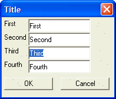

Auto-Selecting Text in a Text Box
By default, when a user tabs into a text box on a dialog, the existing text in the text box (if any) is not selected.
You can specify that the existing text should be selected. This allows the user to easily overwrite the text when they type the first character of a new entry.
To specify that existing text should be auto-selected, use the '*' character in the text box format string. The format string for a control is entered at the start of the control definition between opening and closing '%' characters. A control can have multiple directives in its format string. Each directive is separated with a semi-colon. We will discuss other format directives later. If other format directives are used, the '*' directive must be the first one.
The following script displays a dialog where the text in the third field is auto-selected.
first = "First" second = "Second" third = "Third" fourth = "Fourth" ui_dlg_box("Title",<<%dlg% {region} First|[%*%.20first]; Second |[%*%.20second]; Third |{initial_focus}[%*%.20third]; Fourth|[%*%.20fourth] {endregion}; {region} <*15&OK> <15&Cancel> {endregion} %dlg% ) |
This script creates this dialog:

Lesson 4: Auto Select Text
Next
Limitations
Desktop applications only.